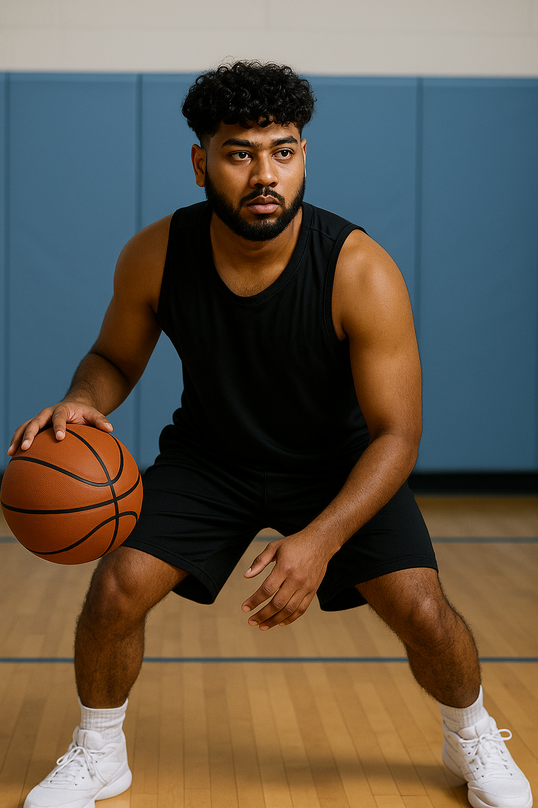

Skills
- I have strong critical thinking and logical reasoning skills, allowing me to analyse problems and develop effective solutions.
- I am highly adaptable and perform well in high-pressure or fast-paced environments.
- My experience as a tutor has strengthened my ability to plan lessons and create structured, engaging educational content.
- I am confident in public speaking and can clearly communicate complex concepts to various audiences.
- I excel at multitasking and efficiently prioritising responsibilities to meet deadlines.
- I handle conflicts professionally and lead with empathy and open communication.
- I am proficient in using digital tools such as Microsoft Office and Google Workspace.
- I have a solid foundation in basic web development, including HTML, CSS, and JavaScript.
- I understand the fundamentals of databases, including writing basic SQL queries.
- I am comfortable working independently and thrive in remote or self-managed work environments.
Hobbies and Interests
- I enjoy coding and regularly work on personal projects using Python and JavaScript to enhance my development skills.
- I am passionate about football, both playing regularly and occasionally coaching younger players.
- I volunteer at educational workshops where I help students improve their academic performance and learning strategies.
- I enjoy playing a wide variety of games on my custom-built PC, which I optimized for performance and visuals.
- In my free time, I love playing basketball as it keeps me active and helps me unwind.
- I enjoy watching documentaries and series related to cybersecurity and emerging technologies.
- I have an interest in exploring new tech gadgets, apps, and productivity tools.
- I play strategy and puzzle games that challenge my problem-solving and critical thinking skills.
- I regularly listen to podcasts about artificial intelligence, innovation, and tech trends.
- I find outdoor fitness and long walks help me stay physically active and mentally refreshed.
